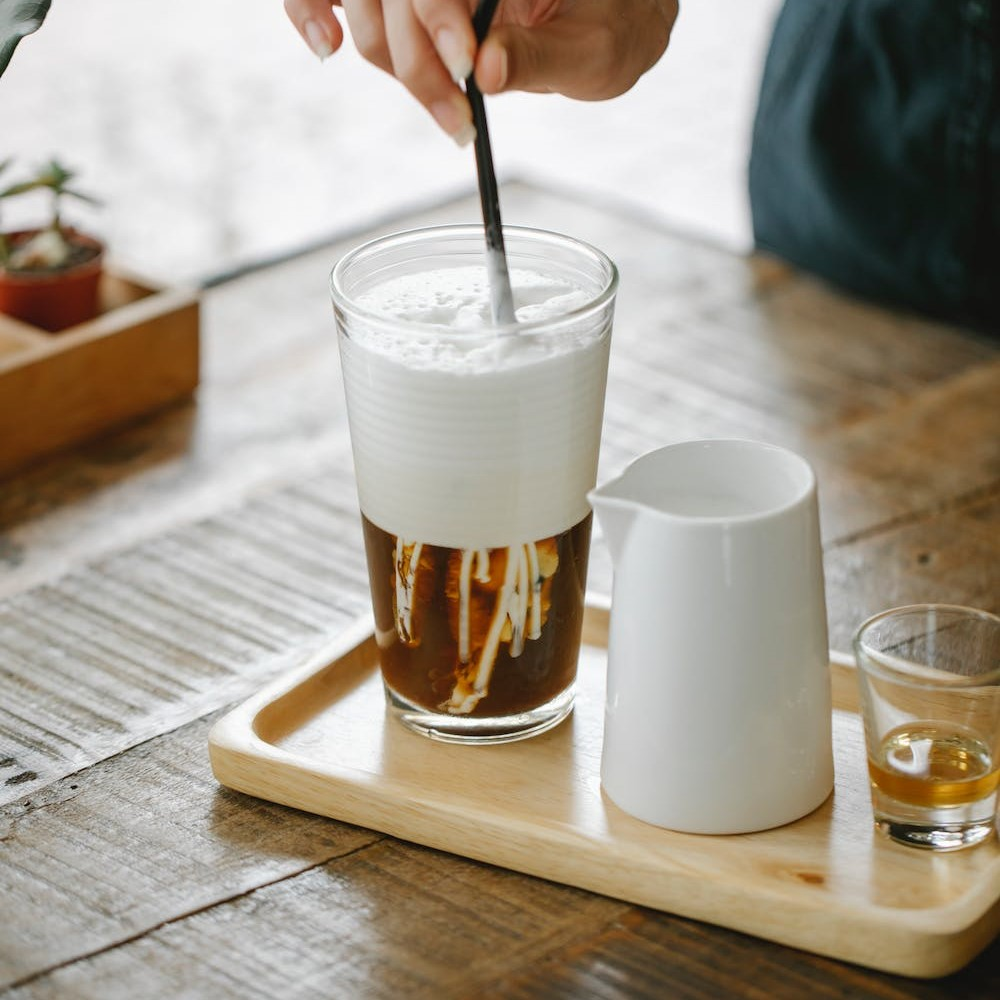

Cold Brew
Hvad er Cold Brew?
Cold brew kaffe er en populær metode til at lave kaffe,
hvor kaffegrums bliver opblødt i koldt vand i en længere periode,
normalt i mindst 12 timer.
Cold brew kaffe har en blødere og mindre
syrlig smag sammenlignet med varm kaffe, hvilket gør den til en populær sommerdrik.
Den er også kendt for sin højere koffeinindhold på grund af den længere bryggetid.
Ingredienser (2 kopper)
- 1,5 dl grovmalet kaffe
- 5 dl koldt vand
Fremgangsmåde
Hæld den grovmalet kaffe i en beholder og tilføj koldt vand.
Rør forsigtigt for at sikre, at kaffen er godt blandet med vandet.
Dæk beholderen med et låg og lad den stå ved stuetemperatur i mindst 12 timer
(op til 24 timer, hvis du ønsker en stærkere koncentration).
Efter bryggeprocessen skal du bruge en finmasket si eller et kaffefilter til at fjerne
kaffegrumsene fra den koncentrerede kaffe. Dette trin kan tage lidt tid,
da det kan være nødvendigt at lade kaffen dryppe langsomt gennem filteret.
Den resulterende koncentrerede cold brew kaffe kan være meget stærk,
afhængigt af din præference. Fortynd den med vand eller mælk i forholdet 1:1 eller efter smag.
Tilsæt isterninger, sukker eller sødemiddel efter behov og server.
Min anmeldelse